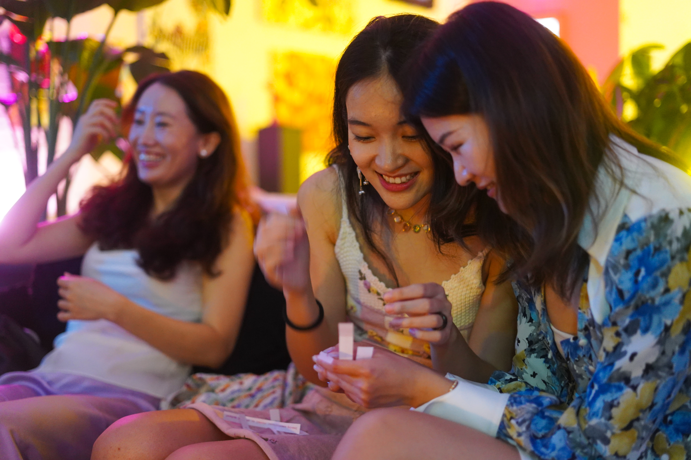

Artsy Mixer, Soho

An event built around conversation, warmth, and the social texture of a room.


Artsy Mixer is a social format I co-hosted in Soho, built around conversation prompts, small-group interaction, and the feeling of entering a room that is already warm.
What interests me in projects like this is not only the event itself, but the design of atmosphere: how people arrive, how they begin talking, how attention shifts, and how a gathering can feel intentional without becoming rigid.